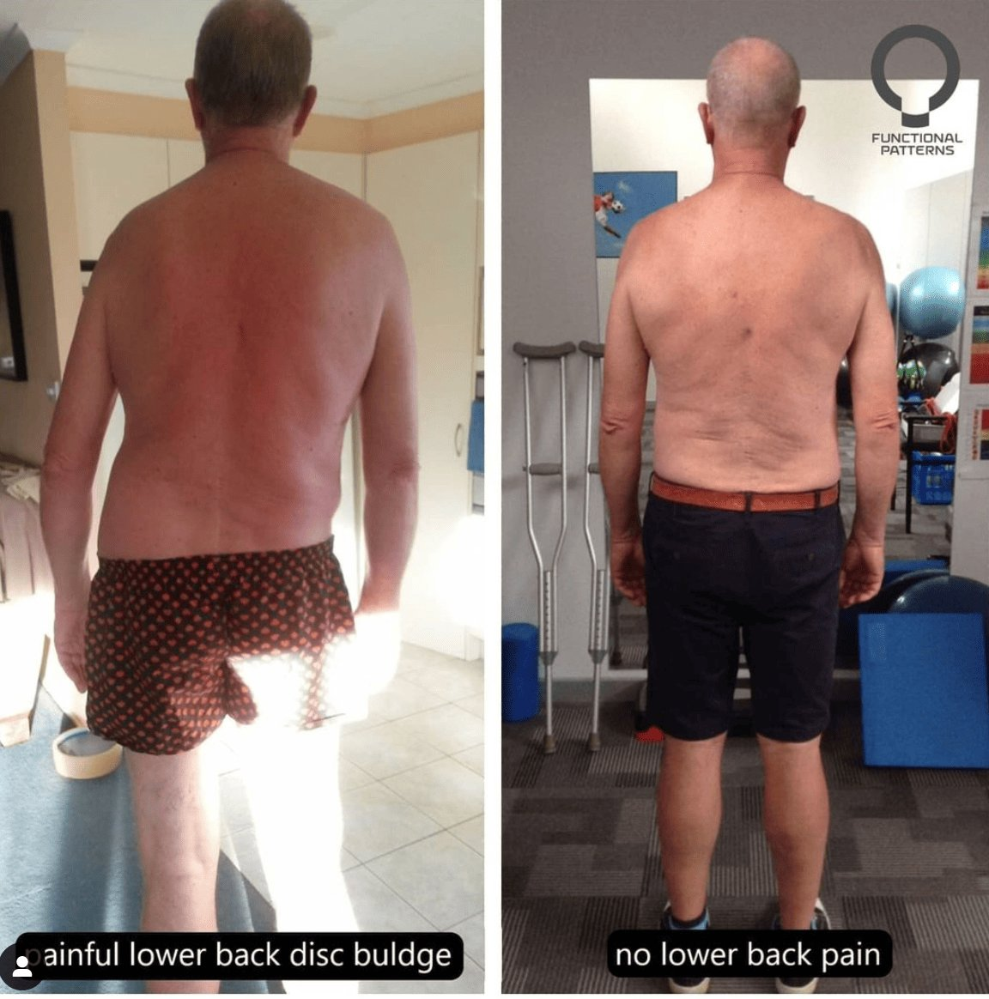
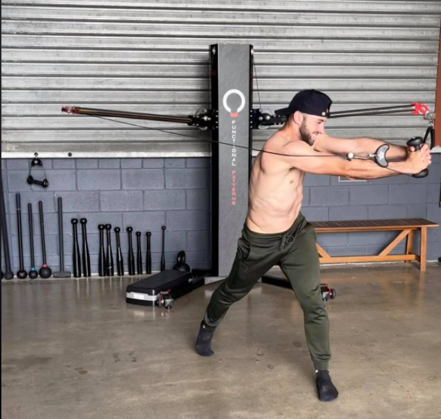
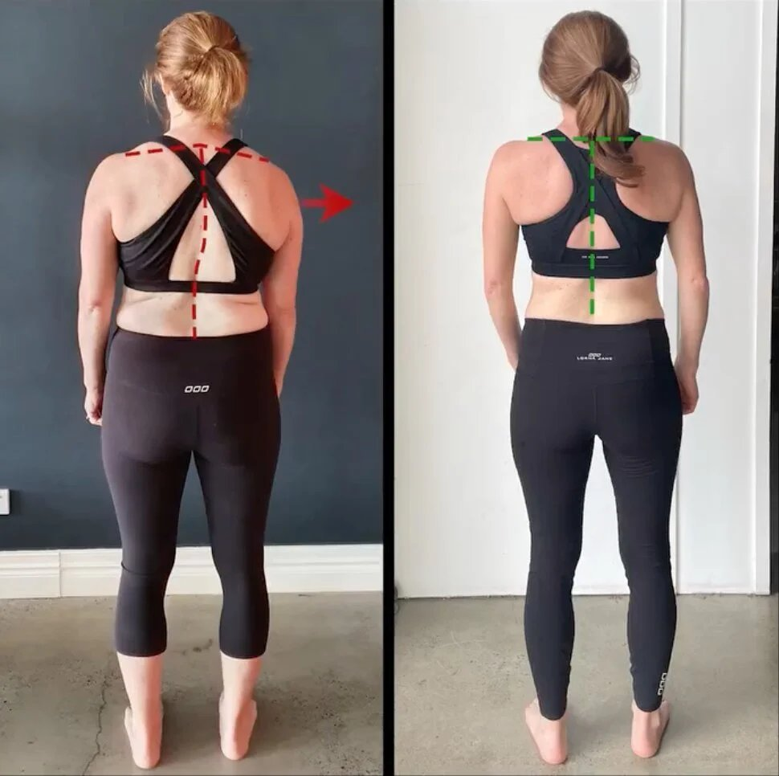
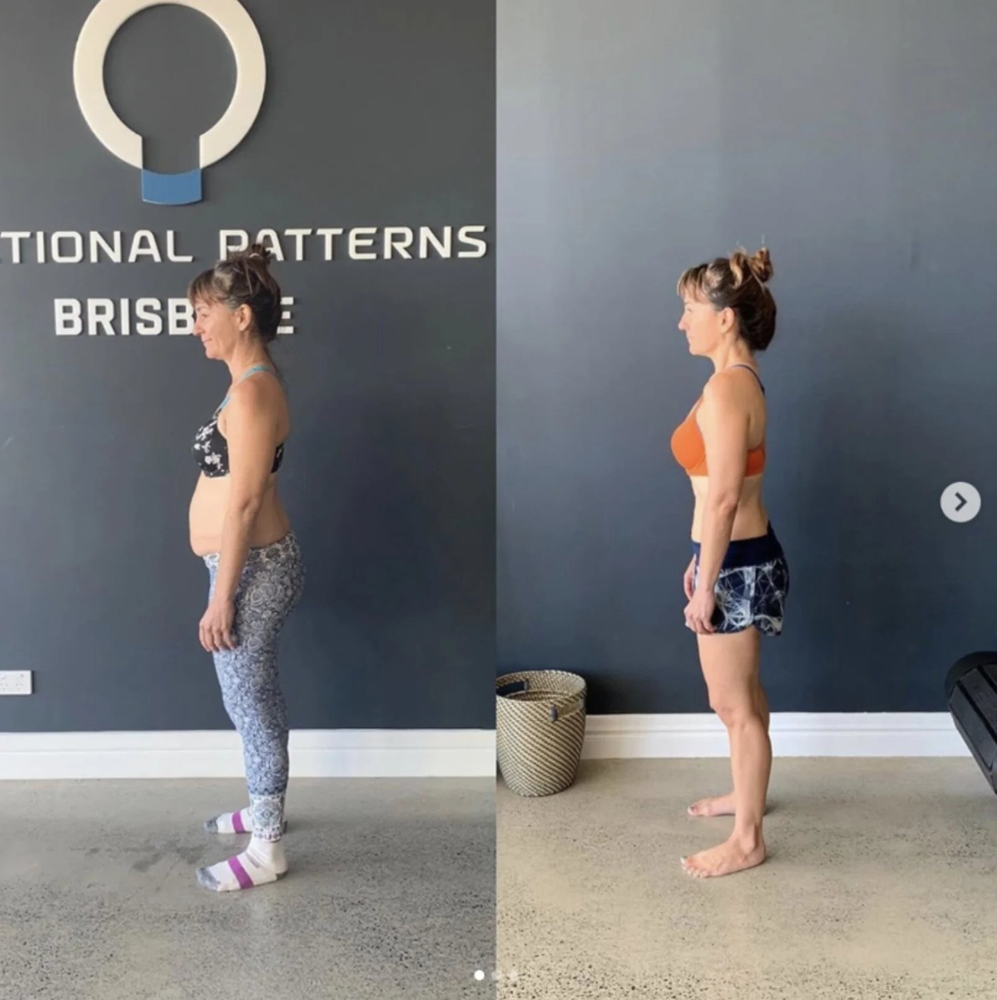

Functional Patterns Debunked: Common Misconceptions
Today we are debunking myths associated with the functional training method: Functional Patterns (FP). This is a comprehensive Functional Patterns review that should leave you feeling empowered and educated.
The Origin of Confusion
One of the biggest misconceptions about functional patterns is that it is simply another name for CrossFit. This confusion likely stems from the fact that both modalities emphasise high-intensity, functional movements. However, they have distinct philosophies and objectives. Understanding the origin of this confusion is key to telling the two appart.
Core Differences
FP, a method created by Naudi Aguilar, focus on movements that mimic real-life activities. The workouts aim to improve your overall functional fitness, posture and frame.
CrossFit is a branded fitness regimen with a competitive sport aspect. On the other hand, FP focuses on movement quality over quantity and intensity. It aims to enhance the way the body naturally moves, reducing the risk of injury and promoting sustainable health.

Beyond Strength and Endurance
Strength and endurance are components of functional patterns training. However, the program places a significant emphasis on improving movement patterns, coordination, and balance. This holistic approach fosters long-term physical well-being. This makes it beneficial for individuals across various lifestyles and with various conditions, not just athletes or fitness enthusiasts.
Myth #2: Functional Patterns is Only for Athletes
Accessible for All Fitness Levels
Some argue that functional patterns is only for elite athletes or those who are already in excellent physical condition. In reality, the principles of FP can benefit people at any fitness level, with any physical condition. The ability to adapt the exercises allows for individual workouts that align with your unique capabilities. FP also takes into consideration your current movement patterns and goals.
Injury Prevention and Recovery
Functional patterns training is not solely about performance enhancement. It serves as an effective means for injury prevention and rehabilitation. By focusing on proper movement mechanics and correcting imbalances, FP can reduce the likelihood of injury. It can also assist in recovering from existing physical ailments.

Promoting Mobility and Daily Function
For non-athletes, functional patterns can significantly improve the ease of daily activities. From lifting groceries to climbing stairs, the training aims to enhance the body's ability to effectively perform everyday tasks. This makes it an excellent choice for anyone looking to improve their quality of life through fitness.
Myth #3: Functional Patterns is Not a Good Cardio Workout
High-Intensity Functional Movements
The belief that functional patterns lack cardio benefits is a misconception. By integrating high-intensity, compound movements, FP workouts can elevate the heart rate and provide a robust cardio challenge. These sessions often lead to improved stamina and heart health.
Full-Body Engagement
Functional patterns workouts engage multiple muscle groups simultaneously. FP centres around the principle of integration, not isolation.
This leads to increased energy expenditure and a potent cardio effect. This full-body approach ensures that no muscle group is left unchallenged, contributing to a comprehensive workout experience. Most people who utilise FP exercises will tell you it is far for intense than the average gym workout, even with far less weight.
Cardio Gains.
Although functional patterns may not include traditional cardio exercises like running or cycling, the modality is versatile enough to incorporate aerobic components. FP practitioners can design programs that blend functional movements with cardio-focused exercises. This allows them to to match the cardio demands of any traditional workout. FP utilises fast, ballistic exercises to integrate new movement patterns.

Myth #4: Functional Patterns Neglects Traditional Strength Training
Some believe that FP neglects traditional strength and weight training and focuses solely on movement patterns. While FP does focus on functional movements and corrective exercises, it also incorporates strength training within its methodology.
The difference lies in the approach. FP integrates strength training into functional movements, ensuring that exercises mimic real-life activities and movements. This helps build strength in a way that supports overall functional capacity, rather than just increasing muscle size.
The Functional Patterns method centres its exercises around your ability to stand, walk, run and throw. Developing strength and competency in these areas creates a well rounded, function and muscular frame.
Being able to bench press heavy weights just do not translate to the same functional gains. To get muscular but stay pain free, swap basic resistance training for the Functional Patterns training system.

Myth #5: Functional Patterns is Only for Young People
Benefits for Seniors
The misconception that functional patterns are exclusively for the young is unfounded. Seniors, in particular, can reap significant benefits from engaging in FP training. The exercises can adapt to accommodate reduced mobility. They are effective in maintaining muscle mass, coordination, and balance, which are crucial for an independent lifestyle.
Age-Related Muscle and Strength Loss
As individuals age, they experience a natural decline in muscle mass and strength, a process known as "sarcopenia". Functional patterns training can counteract these effects by providing resistance and weight-bearing exercises. These exercises stimulate muscle growth and improve overall physical function WITHOUT the general risks of injury.

Myth #5: Functional Patterns is Mainly for Men
Addressing Gender Misconceptions
The myth that functional patterns is a male-dominated training style is another misconception worth debunking. Women can benefit equally from the program. It offers a scalable and adaptable workout that caters to individual fitness levels and goals. Many women have benefitted tremendously and enjoy the specificity of the training techniques.
Building Lean Muscle and Strength
Functional patterns training can help women build lean muscle mass and enhance strength without the compression of weight lifting. Many women experience back pain because of exercise and this causes them to stop training. By focusing on functional movements, women can achieve a toned physique while improving their overall fitness and functionality - longterm.

Improving Movement Patterns for Women
Women can also benefit from the improved movement patterns and coordination that come with functional patterns training. Whether it's for
-
sports performance,
-
daily activities,
-
or injury prevention,
the emphasis on proper movement patterns is beneficial for everybody.
Myth #6: Functional Patterns is Not a Good Form of Exercise for Weight Loss
Metabolic Benefits
Although functional patterns does not solely focus on caloric burn, the training method can still assist weight management. Functional patterns addresses the body as a system. They target chronic inflammation which tends to slow metabolic rate. When the body moves more efficiently and is less inflamed, weight doesn't tend to be an issue.
To add to this, many people rely on their high intensity workouts to keep their weight healthy. Sadly, most people will eventually face an injury and their weight will increase. FP emphasises the need to control behaviours and stress response instead of relying on excessive exercise.
The method itself also causes far less injuries which support long term healthy weigh management. Further to that, the method rehabilitates chronic injuries so that sedentary people can move again.
Complementing Weight Loss Strategies
Functional patterns training can complement other weight loss efforts by improving physical capabilities and endurance. This enhanced fitness level allows individuals to participate more actively in a variety of physical activities. This potentially leads to greater calorie expenditure and weight loss over time.

Holistic Approach to Health and Fitness
In addition to its metabolic effects, functional patterns promote a holistic approach to health. Combined with a balanced diet and lifestyle choices, FP can help create a sustainable framework for managing weight. More importantly, you can address and improve your overall health.
Myth #7: Functional Patterns is Not a Real Workout
Challenging Bodyweight Exercises
Contrary to the myth, functional patterns can provide a rigorous workout without relying on traditional gym equipment. Bodyweight exercises and functional movements are at the core of this training style. The goal is to challenge your body to build strength, stamina, and mobility in a natural and effective way.
A Wide Range Of Uses and The Ability To Adapt
Functional patterns training is versatile and adaptable. This makes it an ideal workout for those who prefer exercising outdoors or at home. With minimal equipment required, individuals can perform a wide range of exercises that target integrate their muscle groups.
Emphasis on Quality Over Quantity
Functional patterns training emphasises the quality of movement over the quantity of weight or the number of reps. This focus on form ensures that each workout is meaningful. Every movement you do should contribute to the overall goal of improving your movement patterns.
Myth #8: Functional Patterns is Not Safe
Understanding Risk and Safety
Functional patterns tends to have a MUCH lower injury rate than other methods. In fact, FP often serves as a rehab technique for people injured by things like yoga and weight lifting.
The Role of Professional Guidance
Working with a trained professional can greatly enhance the safety of functional patterns training. Functional Patterns Practitioners utilise meticulous, eagle-eyed instructions while training. They account for every single rotation, movement and even breath. This expert level of specificity and detail is what gets the crazy results you see online.
Gradual Progression and Adaptation
Functional Patterns starts with a gait cycle (running/walking/posture) assessment. They gauge your current movement patterns, injury history and fitness ability. From there, FP generally start with extremely basic but highly specific movements to get the framework in place.
For example, most people do not use their core and glutes correctly. Rather than jumping into dynamics, your practitioner will most likely get your core and glutes integrated before moving on.
Conclusion
Functional patterns has gained popularity in recent years. But with its rise, there have also been many misconceptions and myths about this form of training. By debunking these myths, we can see that FP is a safe and effective way to improve overall fitness and performance.
FP is suitable for people of all ages and fitness levels. It can provide a challenging and effective workout without the need for traditional gym equipment. It also addresses posture, scoliosis and can rehabilitate a lifetime of injuries. So, don't believe the myths - give functional patterns a try and see the benefits for yourself.